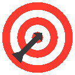

Extension Chrome • GratuiteKeep Focus
Vos objectifs au premier plan, les distractions en pause. Keep Focus bloque les sites qui vous dispersent le temps d'une session et garde vos objectifs de la semaine sous vos yeux, sur chaque page.
Bientôt disponible sur le Chrome Web Store.
Un onglet de trop, et l'heure est passée.
Une notification LinkedIn, un e-mail à vérifier, une vidéo « rapide »... Chaque interruption coûte bien plus que les secondes qu'elle prend. Keep Focus ne vous demande pas plus de volonté : il met la tentation de côté et vous rappelle pourquoi vous êtes là.
Vos objectifs toujours à portée de vue
Une pastille discrète s'affiche sur les sites que vous visitez. Un clic, et vos trois objectifs de la semaine apparaissent, avec le temps restant de la session. Glissez-la où vous voulez sur l'écran : elle s'en souvient.
Une session en un clic
Choisissez 25 min, 1 h, 2 h, jusqu'à ce soir ou une durée sur mesure, puis démarrez. LinkedIn, Gmail, YouTube et les réseaux sociaux sont bloqués par défaut, et la liste se modifie librement en dehors des sessions.
Un rappel au moment exact où il compte
Vous ouvrez un site bloqué par réflexe ? À sa place, Keep Focus affiche le compte à rebours, vos objectifs et votre message personnel. Le rappel le plus utile, au moment où vous en avez le plus besoin.
Un frein honnête pour arrêter
Arrêter avant la fin reste possible, mais pas sur un coup de tête : deux questions de recul, puis une phrase à retaper de mémoire, sans copier-coller. De quoi distinguer une envie d'un vrai besoin.
À votre couleur
Choisissez la couleur de l'interface : toutes les nuances s'ajustent automatiquement pour rester lisibles.
Un chrono calme
Le temps restant ne défile pas à la seconde : il se met à jour à des moments choisis pour ne pas capter votre attention.
Une phrase personnelle
Ajoutez votre propre phrase à retaper pour arrêter une session. Le frein ne peut que se renforcer, jamais s'affaiblir.
Trois étapes, et c'est parti
-
Notez vos objectifs
Trois objectifs pour la semaine, directement dans l'extension.
-
Lancez une session
Choisissez une durée et cliquez sur Démarrer.
-
Avancez
Les sites distrayants attendront la fin du chrono. Le blocage se lève tout seul.
Vos données restent chez vous
- Objectifs, sites bloqués et réglages sont enregistrés uniquement dans votre navigateur.
- Aucun compte à créer, aucune donnée envoyée à un serveur, aucun traceur.
- Désinstaller l'extension supprime toutes ses données.
- Les connexions avec les outils du studio (Objectifs clairs, couleur de vos outils) se font dans votre navigateur, seulement avec votre accord, et se désactivent d'un geste dans les Réglages.
Vous vous demandez peut-être
Keep Focus est-elle gratuite ?
Oui, entièrement et pour toujours : sans publicité, sans abonnement, sans compte. Le studio vit de contributions libres, qui ne donnent aucun avantage : tout est expliqué dans « Notre Constitution », en bas de page.
Quels sites sont bloqués ?
Par défaut : LinkedIn, Gmail, Facebook, Instagram, X (Twitter) et YouTube. Vous pouvez modifier la liste dans les Réglages, en dehors d'une session. Les sous-domaines sont inclus automatiquement.
Puis-je arrêter une session avant la fin ?
Oui, par le parcours d'arrêt : deux questions de recul, puis une phrase à retaper de mémoire. C'est volontairement exigeant, jamais impossible.
Pourquoi l'extension demande-t-elle l'accès à tous les sites ?
Pour afficher la pastille de vos objectifs sur les pages que vous visitez et remplacer les sites de votre liste pendant une session. Keep Focus n'enregistre ni ne transmet le contenu des pages.
Fonctionne-t-elle sur d'autres navigateurs ?
Keep Focus est conçue pour Google Chrome et fonctionne aussi sur Opera.
Keep Focus m'empêche-t-elle de la désinstaller ?
Non. Aucune extension ne peut empêcher sa propre désactivation. Keep Focus rend la distraction impulsive plus coûteuse : c'est un outil de discipline, pas un verrou.
Prêt à reprendre la main sur votre attention ?
Installez Keep Focus, notez vos objectifs et lancez votre première session.
Bientôt disponible sur le Chrome Web Store. Une question ? Écrivez-nous
Les autres créations du studio
-
Objectifs clairs
Transformez une intention floue en trois objectifs concrets.
Disponible -
Plus tard
Mettez une pensée de côté sans quitter votre travail.
À venir -
L'Essentiel
Le résumé d'une page en un clic, à emporter où vous voulez.
À venir